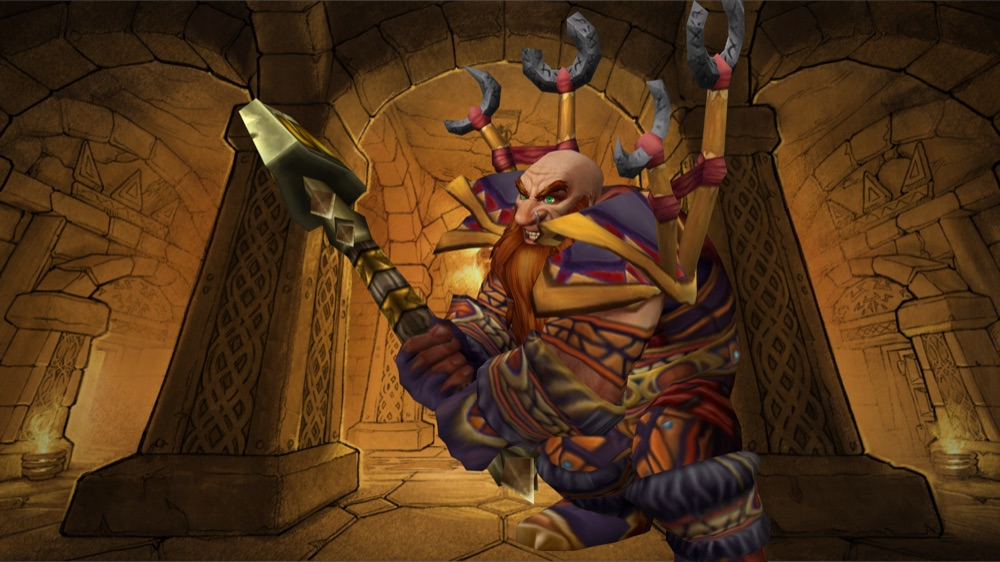

Shaman
Totems and the elements. In Forever the shaman is on both factions for the first time.
Blizzard's description is that shaman "use totems and spells to manipulate the elements" and push the fighters around them to greater strength. The 2004 guide called them the heart and soul of the Horde. They now belong to the Alliance as well, through the dwarves.
That changes more than one class. Blizzard has already lowered the warrior's Battle Shout to allow for both factions having both shaman and paladin buffs.
Who can be one
Alliance: Dwarf.
Horde: Orc, tauren, troll, Windshaper Skyborne.
What to wear
Armor: Leather, then mail later on.
Look for: A bit of everything.
Weapons: A one-hander and a shield, or a two-hander for melee. The guide says shaman "require almost everything" from their stats.
Decide whether you are healing, casting or hitting, and gear for that. Keep a shield either way. The gear guide has the rest.
What we don't know yet
There is no Blizzard deep dive for the shaman yet. We know hit and crit were merged partly to help Enhancement shaman, and nothing else for certain.
A totem is an object a shaman plants in the ground that helps nearby allies for as long as it stands.
Where this comes from
How we verify- Blizzard
The class description, and which races can be shaman
Blizzard: Create the Hero You Want to Be (races, classes and racial traits) - Blizzard
Battle Shout was reduced because both factions now have shaman and paladin buffs
Blizzard: class deep dive, Priest and Warrior - Blizzard
Combined hit and crit help Enhancement shaman
Blizzard: Deep Dive panel recap - The 2004 guide
The guide opens its shaman chapter by calling them the heart and soul of the Horde
Read from the guide, printed page 147 - Not confirmed
What has changed for shaman in Forever
No Blizzard article on the shaman as of our last check.

In the 2004 guide
The 2004 guide gives the shaman 11 pages (pp. 147–157): a short story, an introduction, starting attributes by race, ability tables, talents and strategy.
We have no then-and-now entries for the shaman so far.